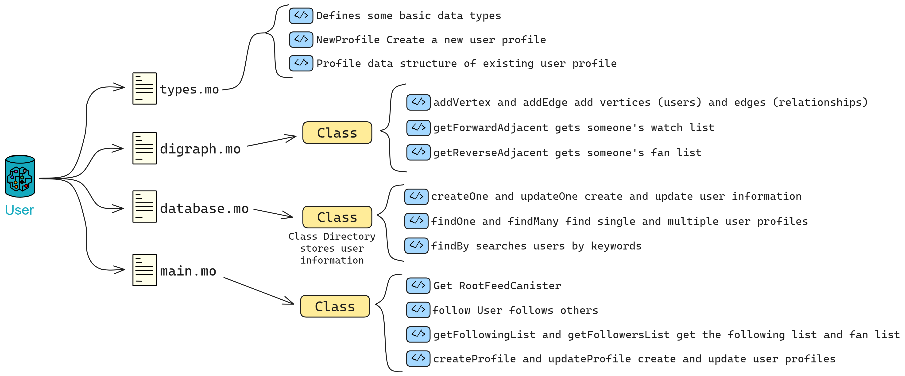

Let's take a look at the User module.
User
The User module is responsible for Proton's user-related functionalities.
The functionalities we need are: follow user, unfollow user, get following list, get followers list, create and update user profiles, as well as user search functionality.
To implement the functionality of users following each other, we first need to store the follow relationships between users. We can use a directed graph as the data structure.
For the user-following functionality, we can model it as a directed graph:
- 1️⃣typse.moDefine type aliases2️⃣digraph.moDirected graph3️⃣database.moStore user profiles4️⃣main.moManage users
- If user A follows user B, a directed edge (arrow) is drawn from node A to node B.
- This forms a directed graph representing the follow relationships between users.

A directed graph can visually represent the follow relationships between users, making it easy to understand and implement related algorithms.
Graph algorithms can also be used to analyze social relationships, such as finding the shortest path between nodes or checking who among the users you follow is followed by them.
Define user profiles: types.mo
Before the directed graph, we need to define some type aliases to list the information in user profiles. In Motoko, use the type keyword to create type aliases, giving a new name to a type to make the code more straightforward and understandable.
Referring to the previous LinkedUp, define in a separate module and import it in the file using the module.
Now, let's define the vertices of the directed graph (users) and user profiles.
import Principal "mo:base/Principal"; // Import relevant content from the Motoko base library
import Time "mo:base/Time";
module {
public type Vertex = Principal;
public type UserId = Principal;
public type Time = Time.Time;
public type NewProfile = {
name: Text;
biography: Text;
company: Text;
education: Text;
imgUrl: Text;
feedCanister: ?Principal;
};
public type Profile = {
id: UserId;
name: Text;
biography: Text;
company: Text;
education: Text;
imgUrl: Text;
feedCanister: ?Principal;
};
};
Import statement:
import Principal "mo:base/Principal";
This line of code means importing a module from Motoko's standard library, specifically the Principal module, which is related to identity and can be considered as the ID of users or services on the IC.
Directed Graph: digraph.mo
Now, let's create the digraph.mo file and define a class Digraph to represent the follow relationships between users.
Write down the types defined earlier:
module {
type Vertex = Types.Vertex;
}；
vertexList stores all the vertices, and edgeList stores all the directed edges, representing the follow relationships:
type Vertex = Types.Vertex;
public class Digraph() {
var vertexList: [Vertex] = []; // Vertices
var edgeList: [(Vertex, Vertex)] = []; // Directed edges
}；
addVertex is used to add vertices (users), and addEdge is used to add edges (follow relationships), using assert to ensure the uniqueness of edges:
type Vertex = Types.Vertex;
public class Digraph() {
var vertexList: [Vertex] = []; // Vertices
var edgeList: [(Vertex, Vertex)] = []; // Directed edges
// The public keyword indicates that this function is accessible to anyone
// If private, it can only be called by code within the Canister, not publicly accessible
public func addVertex(vertex: Vertex) {
vertexList := Array.append<Vertex>(vertexList, [vertex]);
};
// Add a directed edge from fromVertex to toVertex
public func addEdge(fromVertex: Vertex, toVertex: Vertex) {
// Check if it already exists
assert(Array.find<(Vertex, Vertex)>(edgeList, func((x, y): (Vertex, Vertex)): Bool {
x == fromVertex and y == toVertex
}) == null);
edgeList := Array.append<(Vertex, Vertex)>(edgeList, [(fromVertex, toVertex)]);
};
}；
getForwardAdjacent and getReverseAdjacent are used to get forward and reverse adjacent vertices, representing the user's following list and followers list, implemented by iterating through the edge list:
import Array "mo:base/Array";
import Iter "mo:base/Iter";
import Types "./types";
module {
type Vertex = Types.Vertex;
public class Digraph() {
var vertexList: [Vertex] = []; // Vertices
var edgeList: [(Vertex, Vertex)] = []; // Directed edges
public func addVertex(vertex: Vertex) {
vertexList := Array.append<Vertex>(vertexList, [vertex]);
};
// Add a directed edge from fromVertex to toVertex
public func addEdge(fromVertex: Vertex, toVertex: Vertex) {
// Check if it already exists
assert(Array.find<(Vertex, Vertex)>(edgeList, func((x, y): (Vertex, Vertex)): Bool {
x == fromVertex and y == toVertex
}) == null);
edgeList := Array.append<(Vertex, Vertex)>(edgeList, [(fromVertex, toVertex)]);
};
// Get vertices adjacent to the forward edge, i.e., get someone's following list
public func getForwardAdjacent(vertex: Vertex): [Vertex] {
var adjacencyList: [Vertex] = [];
for ((fromVertex, toVertex) in Iter.fromArray<(Vertex, Vertex)>(edgeList)) {
if (fromVertex == vertex) {
adjacencyList := Array.append<Vertex>(adjacencyList, [toVertex]);
};
};
adjacencyList
};
// Get vertices adjacent to the reverse edge, i.e., get someone's followers list
public func getReverseAdjacent(vertex: Vertex): [Vertex] {
var adjacencyList: [Vertex] = [];
for ((fromVertex, toVertex) in Iter.fromArray<(Vertex, Vertex)>(edgeList)) {
if (toVertex == vertex) {
adjacencyList := Array.append<Vertex>(adjacencyList, [fromVertex]);
};
};
adjacencyList
};
};
};
Now, with the directed graph storing user relationships, we also need a place to store user profiles.
Storing User Information: database.mo
Let's create another file specifically for storing user profiles: database.mo.
Define a storage class Directory for user information, using HashMap to store user IDs and their corresponding profiles:
public class Directory() {
let hashMap = HashMap.HashMap<UserId, Profile>(1, isEq, Principal.hash);
};
A hash table, also known as a hash map, is a data structure that allows direct access to data based on key values. A hash table calculates a function (known as a hash function) for a key value, mapping the queried data to a position for access, thus speeding up the search for a specific key value.
The working principle of a hash table can be explained with an intuitive example:
Suppose there is a dictionary with a large amount of information about Chinese characters. To quickly find a specific character, a table is created initially arranged alphabetically by the pinyin letters of each character (similar to the "Pinyin Check Character Table" at the beginning of the dictionary). This establishes a kind of functional relationship between each character and its pinyin letters. When searching for a character, it is only necessary to locate the first letter, the second letter, the third letter, and so on, in this table. Most of the time, it's even possible to determine the accurate position of the character in the dictionary without searching through every letter of its pinyin. In this example, "finding the nth letter of the pinyin" is analogous to the hash function's rule, and the "Pinyin Check Character Table" can be understood as a kind of hash table.
There are also some functions to implement the functionalities of creating user profiles, updating user profiles, retrieving individual user profiles, retrieving multiple user profiles, and searching for users based on keywords.
The createOne and updateOne functions are used to create and update user profiles by calling the put function to add user IDs and profiles to the HashMap.
public class Directory() {
let hashMap = HashMap.HashMap<UserId, Profile>(1, isEq, Principal.hash);
public func createOne(userId: UserId, profile: NewProfile) {
hashMap.put(userId, makeProfile(userId, profile));
};
public func updateOne(userId: UserId, profile: NewProfile) {
hashMap.put(userId, makeProfile(userId, profile));
};
// Other functions...
}
The findOne function is used to retrieve an individual user profile by calling the get function from the HashMap.
public func findOne(userId: UserId): ?Profile {
hashMap.get(userId)
};
The findMany function is used to retrieve multiple user profiles by iterating through the list of user IDs and calling the getProfile function.
public func findMany(userIds: [UserId]): [Profile] {
func getProfile(userId: UserId): Profile {
Option.unwrap<Profile>(hashMap.get(userId))
};
Array.map<UserId, Profile>(userIds, getProfile)
};
The findBy function is used to search for users based on keywords, iterating through the user profiles in the HashMap and finding matching profiles.
public func findBy(term: Text): [Profile] {
var profiles: [Profile] = [];
for ((id, profile) in hashMap.entries()) {
if (includesText(profile.name, term)) {
profiles := Array.append<Profile>(profiles, [profile]);
};
};
profiles
};
The auxiliary function makeProfile is used to create an instance of a user profile, and includesText is used to determine if one string contains another.
func makeProfile(userId: UserId, profile: NewProfile): Profile {
{
id = userId;
name = profile.name;
biography = profile.biography;
company = profile.company;
education = profile.education;
imgUrl = profile.imgUrl;
feedCanister = profile.feedCanister;
}
};
func includesText(string: Text, term: Text): Bool {
let stringArray = Iter.toArray<Char>(string.chars());
let termArray = Iter.toArray<Char>(term.chars());
var i = 0;
var j = 0;
while (i < stringArray.size() and j < termArray.size()) {
if (stringArray[i] == termArray[j]) {
i += 1;
j += 1;
if (j == termArray.size()) { return true; }
} else {
i += 1;
j := 0;
}
};
false
};
database.mo:
import Array "mo:base/Array";
import Hash "mo:base/Hash";
import HashMap "mo:base/HashMap";
import Iter "mo:base/Iter";
import Nat "mo:base/Nat";
import Option "mo:base/Option";
import Principal "mo:base/Principal";
import Time "mo:base/Time";
import Types "./types";
import TrieMap "mo:base/TrieMap";
import TrieSet "mo:base/TrieSet";
module {
type NewProfile = Types.NewProfile;
type Profile = Types.Profile;
type UserId = Types.UserId;
type Time = Time.Time;
public class Directory() {
let hashMap = HashMap.HashMap<UserId, Profile>(1, isEq, Principal.hash);
public func createOne(userId: UserId, profile: NewProfile) {
hashMap.put(userId, makeProfile(userId, profile));
};
public func updateOne(userId: UserId, profile: NewProfile) {
hashMap.put(userId, makeProfile(userId, profile));
};
public func findOne(userId: UserId): ?Profile {
hashMap.get(userId)
};
public func findMany(userIds: [UserId]): [Profile] {
func getProfile(userId: UserId): Profile {
Option.unwrap<Profile>(hashMap.get(userId))
};
Array.map<UserId, Profile>(userIds, getProfile)
};
public func findBy(term: Text): [Profile] {
var profiles: [Profile] = [];
for ((id, profile) in hashMap.entries()) {
if (includesText(profile.name, term)) {
profiles := Array.append<Profile>(profiles, [profile]);
};
};
profiles
};
// Helpers
func makeProfile(userId: UserId, profile: NewProfile): Profile {
{
id = userId;
name = profile.name;
biography = profile.biography;
company = profile.company;
education = profile.education;
imgUrl = profile.imgUrl;
feedCanister = profile.feedCanister;
}
};
func includesText(string: Text, term: Text): Bool {
let stringArray = Iter.toArray<Char>(string.chars());
let termArray = Iter.toArray<Char>(term.chars());
var i = 0;
var j = 0;
while (i < stringArray.size() and j < termArray.size()) {
if (stringArray[i] == termArray[j]) {
i += 1;
j += 1;
if (j == termArray.size()) { return true; }
} else {
i += 1;
j := 0;
}
};
false
};
};
func isEq(x: UserId, y: UserId): Bool { x == y };
};
Integrating All Functions: main.mo
After completing types.mo, digraph.mo, and database.mo, the final step is to integrate the aforementioned modules using the actor and implement all functionalities.

The Digraph class implements a directed graph data structure for storing relationships between users. The Database class implements a database for user profiles.

Now, we use the User actor class to implement the main functionalities of the user module. The User class represents a user in the social network, including functions such as following other users, retrieving the list of followers, obtaining the list of followers, creating and updating user profiles, and searching for users.
Relationships between modules:

The User actor relies on the Digraph and Database classes to implement the underlying data structures.
In Motoko, an actor is a special type that can be thought of as a small machine or service capable of executing code. Each actor has a unique Principal ID, and it can be considered an entry point for a microservice in a service-oriented architecture.
actor class Feed(...) = this { ... }
Here, we see an actor class, which is a special form of an actor that can accept parameters to create new actor instances. This is similar to classes in object-oriented programming.
According to the previous design, the functionalities we want to implement are summarized as follows:
- Allow one user to follow another user, updating the directed graph's edges and notifying the followed user's Feed Canister to update the followers' list.
- Query the following list and followers list of a specific user through the directed graph.
- Add and update a user's profile.
- Query user profiles.
Here is the English translation:
We create a rootFeedCanister to record the Root Feed Canister.
The init function is used to initialize the user's root Feed Canister.
The getRootFeedCanister function is used to retrieve the user's root Feed Canister.
// Define UserActor
actor class User() = this {
// Use a variable to represent the Root Feed Canister (used to store user feed data)
// Principal.fromText is used here, so import the module above: import Principal
stable var rootFeedCanister = Principal.fromText("2vxsx-fae");
// Initialization function, set Root Feed Canister
public shared({caller}) func init(_rootFeedCanister: Principal) {
rootFeedCanister := _rootFeedCanister;
};
// Query Root Feed Canister
// The query keyword indicates a query function, used to query data
// The response is very fast, does not go through consensus, and does not change the Canister state
public query func getRootFeedCanister(): async Principal {
rootFeedCanister
};
}
Public, private, and shared functions:
Functions in Motoko can be public (public), private (private), similar to access control in other programming languages. shared functions are a special type of public function that can communicate between different actors.
public shared({caller}) func init(...) { ... }
This function can be called by an external actor, and {caller} is a pattern match used to obtain the identity of the caller.
The follow function is used for a user to follow another user, involving updating the follower's Feed Canister and updating the directed graph.
// Function for a user to follow another user
public shared({caller}) func follow(user: Vertex): async () {
// Check if Root Feed Canister is anonymous
assert(not Principal.isAnonymous(rootFeedCanister));
// Create a RootFeedActor instance based on Root Feed Canister
let rootFeedActor: RootFeedActor = actor(Principal.toText(rootFeedCanister));
// Iterate through all user Feed Canisters in Root Feed Actor
for((_, _feedCanister) in (await rootFeedActor.getAllUserFeedCanister()).vals()) {
// Create a FeedActor instance based on Feed Canister
let feedActor: FeedActor = actor(Principal.toText(_feedCanister));
// Ignore the return value when calling followers, the list of followers is in the Feed Canister
ignore feedActor.updateFollowers(Array.append(
graph.getReverseAdjacent(user),
[caller]
));
};
// Add an edge in the graph, indicating that the user is following another user
graph.addEdge(caller, user);
};
The shared keyword is used to declare a function or type as shared. This means that they can be shared and used between different actors.
If you declare a public shared function in one actor, this function can be called by other actors and modify their state through asynchronous message passing.
public shared func oneway() { }; is an example of a function with no return type that can modify the actor's state and returns () regardless of success.
Motoko also defines a series of shared types. Only shared types can be used as parameters and return values for public shared functions. These shared types include all primitive types (except the Error type), the Option type, tuple types, immutable array types, object types, etc. For example, Nat and Text are shared types.
The getFollowingList and getFollowersList functions retrieve the user's following list and followers list.
The createProfile and updateProfile functions create and update user profiles.
The getProfile function retrieves the user's profile.
The searchProfile function searches for users based on keywords.
Overall, this is how it looks:
The complete main.mo file is as follows:
import Array "mo:base/Array";
import Digraph "./digraph";
import Database "./database";
import Principal "mo:base/Principal";
import Types "./types";
// Define UserActor
actor class User() = this {
// Use a variable to represent the Root Feed Canister (used to store user feed data)
// Principal.fromText is used here, so import the module above: import Principal
stable var rootFeedCanister = Principal.fromText("2vxsx-fae");
// Initialization function, set Root Feed Canister
public shared({caller}) func init(_rootFeedCanister: Principal) {
rootFeedCanister := _rootFeedCanister;
};
// Query Root Feed Canister
// The query keyword indicates a query function, used to query data
// The response is very fast, does not go through consensus, and does not change the Canister state
public query func getRootFeedCanister(): async Principal {
rootFeedCanister
};
// ==================== Follow Info ====================
// Define type aliases
type Vertex = Types.Vertex;
type RootFeedActor = Types.RootFeedActor;
type FeedActor = Types.FeedActor;
// Create a directed graph instance
var graph: Digraph.Digraph = Digraph.Digraph();
// Function for a user to follow another user
public shared({caller}) func follow(user: Vertex): async () {
// Check if Root Feed Canister is anonymous
assert(not Principal.isAnonymous(rootFeedCanister));
// Create a RootFeedActor instance based on Root Feed Canister
let rootFeedActor: RootFeedActor = actor(Principal.toText(rootFeedCanister));
// Iterate through all user Feed Canisters in Root Feed Actor
for((_, _feedCanister) in (await rootFeedActor.getAllUserFeedCanister()).vals()) {
// Create a FeedActor instance based on Feed Canister
let feedActor: FeedActor = actor(Principal.toText(_feedCanister));
// Ignore the return value when calling followers, the list of followers is in the Feed Canister
ignore feedActor.updateFollowers(Array.append(
graph.getReverseAdjacent(user),
[caller]
));
};
// Add an edge in the graph, indicating that the user is following another user
graph.addEdge(caller, user);
};
// Get the user's following list
public query({caller}) func getFollowingList(user: Vertex): async [Vertex] {
graph.getForwardAdjacent(user)
};
// Get the followers list
public query({caller}) func
getFollowersList(user: Vertex): async [Vertex] {
graph.getReverseAdjacent(user)
};
// ==================== Profiles ====================
// Define type aliases
type NewProfile = Types.NewProfile;
type Profile = Types.Profile;
type UserId = Types.UserId;
// Create a database instance to store user profiles
var directory: Database.Directory = Database.Directory();
// Create a user profile
public shared({caller}) func createProfile(profile: NewProfile): async () {
directory.createOne(caller, profile);
};
// Update a user's profile
public shared({caller}) func updateProfile(profile: NewProfile): async () {
directory.updateOne(caller, profile);
};
// Get a user's profile based on user ID
public query func getProfile(userId: UserId): async ?Profile {
directory.findOne(userId)
};
// Search for user profiles based on a search term
public query func searchProfile(term: Text): async [Profile] {
directory.findBy(term)
};
}
Now, the User module is complete with basic social network functionalities. It maintains relationships between users using a directed graph, stores and queries user profiles using a database, and updates user activities through the Root Feed Canister.
Next, we'll move on to building the Post module.